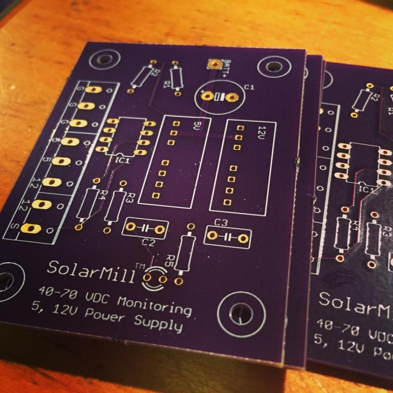

Since most of the OpenEnergyMonitor ecosystem is geared towards grid-tied AC systems, we’ve spent the past few weeks working on new functionality that will allow us to monitor and log the power and energy readings from our off-grid setup. There’s been several posts about this topic and we’ve used that knowledge to help point us in the right direction. Ultimately, we ended up designing a custom PCB for the voltage monitor and sent the files off to OSH Park to have them printed. We’re selling off the extras for anyone that’s interested.
The major differences between this and the standard Emon setup:
- Current must be measured by either shunt resistors (invasive) or hall effect sensors. CT clamps will not work with DC.
- The battery bank voltage needs to be stepped down for input into the Arduino.
So far we’ve spent the majority of our effort working on the voltage monitoring portion.
Our Existing System and Needs
We run a woodshop on solar power, but some parts of the shop (lighting, mini fridge, office computer) are still on the grid. We are using the standard EmonPi to monitor all incoming grid power though our main breaker box. We are also using a stock EmonTX to measure the AC output of our Outback VFX3648 Inverter. However, we still need to measure the current of some additional DC loads that do not go through the inverter and we also need to measure the voltage levels of our battery bank.
Most importantly, we would like to measure the balance of current in the three major branches of an off grid system: the Solar (always positive), the Load (always negative), and the Battery (+/- depending on the other two). Initially we intended to put large hall effects on each of those three major branches but then realized we only really needed two of them (solar & batt) and we can extrapolate the value of the third (Load).
Our hardware includes 8x Trojan T-105 6v Batteries (~10kWh capacity) in a 48v series configuration, an Outback VFX3648 Inverter, an Outback FM80 Charge controller, and 2,300 Watts of Sharp brand solar panels mounted on our roof. We run everything from thickness planers and miter saws, to routers and table saws with this setup. No problems so far (over 3 years), but better power monitoring would be nice.
Voltage Monitoring PCB
Our PCB combines three basic circuits: a voltage divider, an opamp, and a power supply. These three systems combine to prepare a higher voltage DC signal for input into an Arduino.
Voltage Divider Resistors
We are using a combination of a voltage divider and an opamp to scale, offset, and isolate the battery voltage from the arduino. Since ours is a 48v battery system, we used resistor values of 80k and a 5k to divide the voltage down to 2.82V, which is nicely in our range for Arduino measurement.
We can't feed this output directly to the Arduino though. Although it's in a safe voltage range, the Arduino's impedance varies while sampling, in such a way that the voltage divider's output will be affected. This is because we used high value resistors in our divider to minimize the wasted power. We could use lower values, but the amount of current constantly passing through them would be a drain on the batteries. To correct this, we feed the output of the voltage divider into an op-amp.
Opamp
The battery bank voltage swings from 42V minimum when they are almost empty to 65V maximum when the batteries are being equalized. That’s a 23volt range, so to maximize resolution we used a circuit simulator (LTSpice) and adjusted the feedback portion of the opamp to find a configuration that gives us a linear output from the opamp of 0.6V to 3.0V for a 42-65V range. An additional benefit of the opamp is it isolates the battery side of the circuit from the Arduino. [op-amp isolation just means current/voltage isolation, not electrical isolation like with an optical isolator] We decided to use a Texas Instruments LT1013CP opamp.
Accessories
Since our opamp needs power, we added a 48v-5v DCDC power supply to our design. This can also be used to power the Arduino, which is nice. We also added a 12v Supply to power a Hall effect break out board. We put our selected components into a PCB design program (Eagle) and after using their automatic routing option, spent a few hours cleaning up the design to make it look pretty. We added a capacitor on the input side of the circuit to filter out some noise and act as a local power supply to our DCDC converters. For safety, we included an inline fuse that’s rated for 125v DC with a value of 315mA. At 50 volts it’s capable of passing 15 Watts of power to our little PCB, which is more than enough for our board but low enough to protect the input traces from bursting into flames. It would have been nice to actually go a little lower, but I couldn’t find lower values at our required voltage rating on DigiKey. Aside from the inline fuse lead, which connects to Batt+, all other inputs/outputs are handled by a terminal block at the bottom of the board.

Make it your own:
The resistor values and power supplies for our PCB are specifically designed for 48v battery banks. However, if you are running a 24v or 12v setup, all you need to do is change the resistor values and swap out the DCDC power supplies to another model in the same series.
Next Steps
We'll write a follow up with a bill of materials and the design files. Since we had to make a minimum of 6 of them, we have 4 more available for sale (fully assembled) if anyone is interested. As soon as we get the boards in from OSH Park we'll give an update with how well it works as well as details on how to integrate it with the Arduino. If all goes well, we'll proceed to work on the Hall effect portion of the design. Eventually the voltage monitoring PCB and the Hall effect PCB can be combined into a single unit much like the EmonTX.
Looking forward to getting feedback on our design,
Thanks!
Bert and Andy
SolarMill
Re: 48V DC Energy Monitoring for Off Grid Applications
That looks quite an interesting set-up.
I appreciate the op. amp's usefulness for scaling and providing the required offset, but I'm surprised you found that the varying input impedance of the multiplexer has a significant effect. The data sheet recommends a source impedance of less than 10 kΩ so that the sample & hold capacitor, which is quite small, charges adequately quickly. And from that, I'd considered that with a source impedance of 10 kΩ or less, the measurement error from that source would be in the order of ½ LSB or less, i.e. it would not be significant. Your source impedance is 4.7 kΩ. Are you able to quantify the effect that lowering the driving impedance to a few tens of ohms had on your readings?
Re: 48V DC Energy Monitoring for Off Grid Applications
The first 1.5 ADC clocks (out of a total of 13 for a conversion) charge the sample-n-hold cap. A typical ADC clock rate is 125kHz, so a conversion takes 104 usecs, the first 12 usecs of which is charging the cap. I just did a spot check on a random ATmega2560 I had handy. The trace below is the voltage at an ADC input pin being driven to 0V through a 10K R. Immediately before initiating a conversion on this pin, I was doing a conversion on a different pin being driven to 5V, ensuring the cap was fully charged. The 0V pin spiked to just over 600mV as it was selected, and then decayed back down to 0V about 3 usecs later, well within the 12 usecs allotted. The conversion consistently returns 0.
Re: 48V DC Energy Monitoring for Off Grid Applications
I think that supports the information in the Atmel data sheet.
So it would seem that "the Arduino's impedance varies while sampling, in such a way that the voltage divider's output will be affected. This is because we used high value resistors..." is based on a misconception and there is no discernible effect in practice, and so there is unlikely to be a significant effect until the source impedance is well in excess of the 10 kΩ recommended maximum.
Re: 48V DC Energy Monitoring for Off Grid Applications
That was the assumption we were operating on, based on comments in other forums about the need for an opamp between a voltage divider and the analog input pin. We modeled it in the software, and also with the online calculators but without the type of lab equipment you guys have it was hard to verify. When I'm working in an area of knowledge outside my core competencies, I tend to rely on best practice methods and in researching this came across countless examples of opamps being used to fix the effects that sampling may have on a source. Didn't to repeat incorrect information, we were just explaining our design process to the best of our abilities. Thanks for the additional information and insight.
As you pointed out, there are additional benefits to the opamp that still justify its usage. We are able to scale the values we are working with: the 23v possible range of our battery state of charge happens in the upper 35% of what would otherwise be a 0-65v measurement. With an opamp we can focus on the 23 volts that really matter and increase our resolution. We can also offset these values so they better fit into the range of the Arduino's inputs.
Considering that the opamp only cost $2.65, it seemed like a safe route to go with some additional perks along the way.
>> edited for tone
Re: 48V DC Energy Monitoring for Off Grid Applications
Are those two benefits worth the inclusion of a $2.65 part?
Absolutely. It's just that a lot of the designs used around here do monitor signals with a source impedance of roughly 10K and with no op-amp between them and the ADC input, so if there were a problem with a 4.7K source impedance, people would rightly want to know more.
well in excess of the 10 kΩ recommended maximum
Well in excess might be a bit bold, but I think if you stick with the 10K recommendation you should be fine. My test above was just performed on a single part, and the ADC internal series resistance can vary anywhere from 1K to 100K.
Re: 48V DC Energy Monitoring for Off Grid Applications
In my book, "in excess" means a few percent greater than but below about 20% greater, "Well in excess" means greater than that. "Several times" means greater than about 2.5 times.
So while, dBC, your result falls within my definition of "several times", I restrained myself to "well in excess". However, it's quite conceivable that at some combination of parameters (inter alia temperature, clock speed, supply voltage) 10 kΩ is a critical limiting value.
SolarMill: As you were making a PCB and providing a power supply for other reasons, then adding an op-amp was undoubtedly the best way to go. As dBC pointed out, others might have been confused because one of your reasons appears to have gone against established practice. But in many cases, the cost (I'm including battery life as a potential 'cost') or complications of including an op-amp and providing a power supply are unacceptable or unwarranted.
Re: 48V DC Energy Monitoring for Off Grid Applications
If you are trying to reduce power consumption (and probably even if you're not) remember to disable the digital input buffer on your analog input pins. Feeding them Vcc/2 causes them to draw significant current as it means both transistors are on (at least partially) providing a path from Vcc to GND within the buffer (the current draw isn't through the input pin). I've clocked it at about 800uA per pin on a 5V 2560 which potentially dwarfs anything saved by going with a high resistor divider. See the DIDRn registers for details.
For the same reason, always enable the pull-ups on unused pins. I've got a 2560 here that draws 62.5mA on the 5V rail when all inputs are configured as inputs (the power-up default) with nothing connected. That drops to 42.6mA after enabling all pull-ups. Those digital input buffers are at their best when you feed them 0V or Vcc; leave them floating (or feed them an analog signal) and they start to suck current.
Re: 48V DC Energy Monitoring for Off Grid Applications
A few days after sending off the board design for printing I came across some comments in another thread about tying down the unused opamps to reduce noise and power consumption. We are are using a dual opamp, so there's only one left over. I'm still not sure about the best way to do this, though. Do we just connect the unused pins to ground or do we need a resistor in there? Why does connecting them to either 0v or Vcc have the same effect? Is Vcc the same as Vcc-? In our package, we have 3 pins left unconnected: 2out, 2in-, and 2in+. What should we do with each of them?
The engineering intern who's been working on this design is on vacation and returns next week, but I'm trying to keep things moving along so please excuse all the questions.
Thanks for the help,
-Bert
Re: 48V DC Energy Monitoring for Off Grid Applications
"A few days after sending off the board design..."
It's always like that!
You connect the -input to the output, (turning into a voltage follower), you tie the +input to a defined in-range voltage (which could be + input of the other half - it looks to be as good a place as any, and a by-product of doing that is you have a buffered version of the divided-down battery voltage, should you want it.) That needs just two wire links on the underside of the PCB.
See http://www.maximintegrated.com/en/app-notes/index.mvp/id/1957
Re: 48V DC Energy Monitoring for Off Grid Applications
Thanks. We just received the PCB boards in the mail and and already found a minor issue with them: the pads for the DCDC supplies are flipped from where they should be (at the opposite edge of the part than where they belong). Otherwise, they look great. Since we're gonna have to get them remade anyway, we can incorporate those changes into the opamp while we're at it. That said, any other thoughts about the design that could be improved or tweaked? Our ultimate goal is a well designed open source module that anyone can make for monitoring their off-grid systems, complete with power supplies for Arduino and accesories (such as Hall effect current sensors).

Re: 48V DC Energy Monitoring for Off Grid Applications
The design is somewhat restricted because it does not provide you with galvanic isolation on the voltage, and as a consequence of that it requires the battery negative to be both earthed and the common GND connection for the Arduino. As long as that limitation is understood and is acceptable, and it is being used at low voltages only, that is probably OK. But if for any reason the battery negative is not earthed, then you have a potentially dangerous situation.
The pcb layout also restricts it to low battery voltages, and it will not be possible to use it - even leaving off the dc-dc converters - on higher voltages because of the minimal creepage distance between battery positive and GND (= battery negative).
It is not usual to have components at weird angles (R1, R2) and there's no need for it.
You might find it helpful to put the component values on the silk screen as well as their designations, and outside their profile; you want to show the LED polarity; and the + for C1 wants to go outside its profile too (outside so that you don't need to resort to an empty board to check values and orientation).
Re: 48V DC Energy Monitoring for Off Grid Applications
I've built a circuit to measure DC Voltage with full galvanic isolation using the HCPL-7520, and an Isolated DC-DC Converter to supply power to the isolated side, only pencil diags thus far, so will post more details later once I have done formal schematics. Also do isolated DC Current measuring with the ACS 758.
One has to measure mV from these devices so precision is required, and I used a Max 6126 for this.
Its taken a while.
Re: 48V DC Energy Monitoring for Off Grid Applications
I really look forward to seeing how this goes, when I first saw the Open Energy Monitor I just assumed it would have this capability. Glad to see it will happen! We have an off grid 48V system here as well.
Re: 48V DC Energy Monitoring for Off Grid Applications
I'm watching this too! @SolarMill, thanks for sharing your progress.